The Interactive Web Project:
the story of the Walt Disney Concert Hall
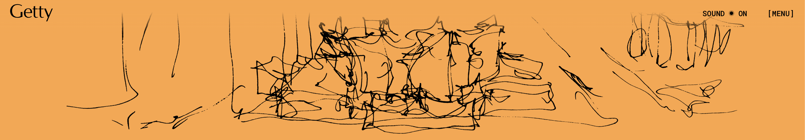
Responses
The first thing I paid attention to is the patterns in motion and images
that make up a large portion of the page. The moving things lead me to
watch the whole website. And I think my mother-tongue system may impact
it. Although the words are so big in some pages, for the first time, I
still think they are just like descriptions.
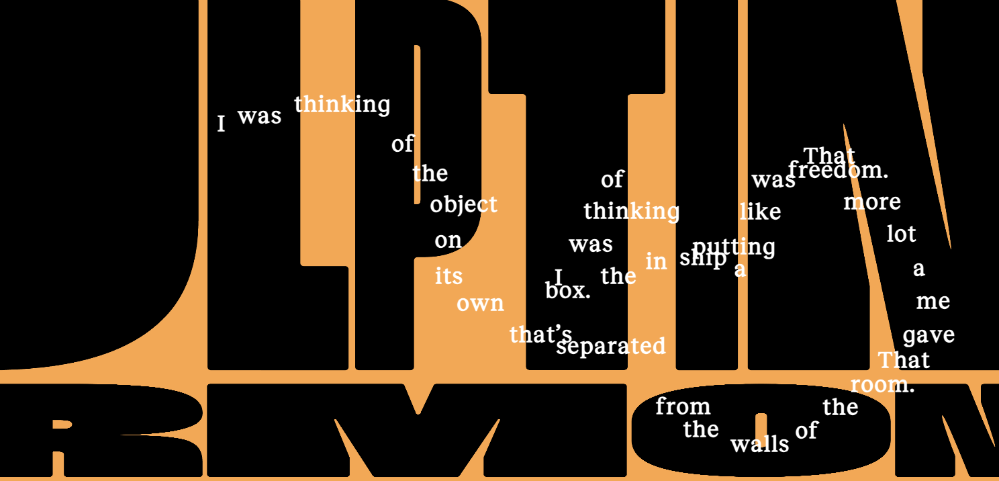
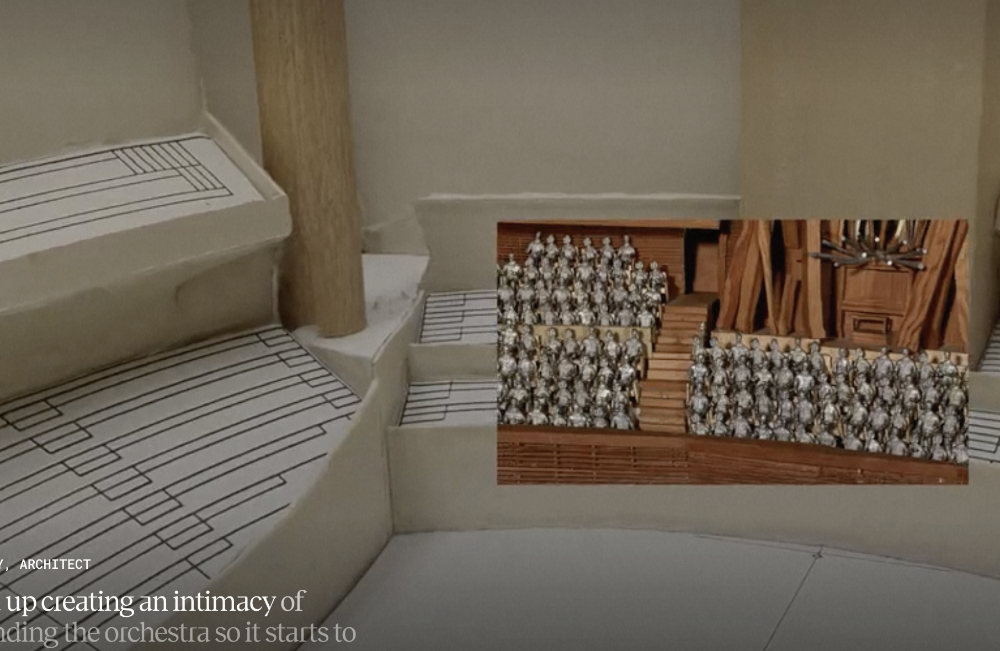
swip down the screen to see all the content.
swipe the screenhorizontally to interact with the website to make
something appear.
moving the mouse to control the strings (they form some special motifs)
to move slightly in the direction of the mouse to create some 3D
spatial sense. click to the next page or part click to pause
the video click some specific leading buttons or pictures to see
the folded content. click pictures to see the whole pictures list
click the button in the upper right corner to go back to the menu
page click the button in the upper right corner to open or close
the background sounds
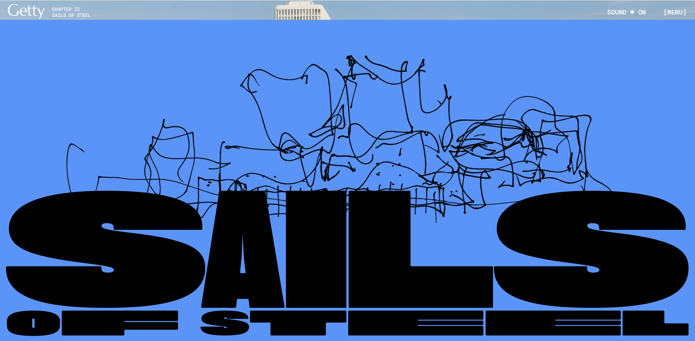
I mainly focused on areas that used video and animation interactions.
The combination of video and audio, coupled with the constant changes in
visual effects, not only showcases rich content, but also makes the
overall narrative vivid and layered, making it worth savoring over and
over again.
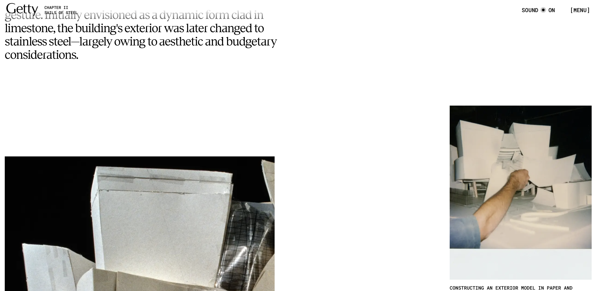
The most common operation is repeated scrolling (including up and down
scrolling and partial horizontal sliding). This repetitive gesture
constantly refreshes the perception of the content and feels the changes
brought about by different interactive feedback.
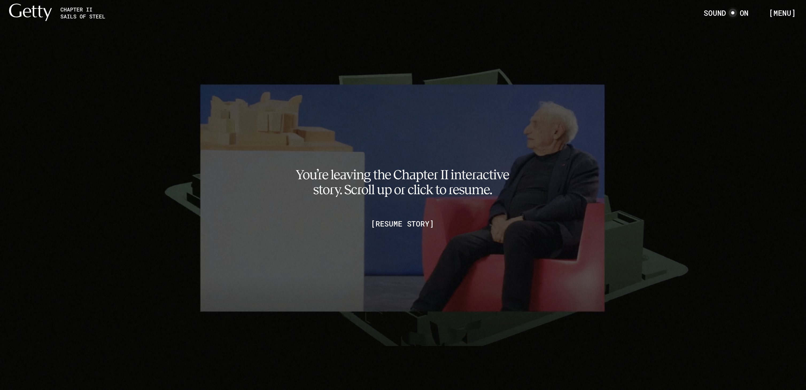
The interactive experience is designed to create a smooth and immersive
sensory journey. The clever combination of text, pictures and videos
guides users into an engaging narrative. Each section is independent and
interconnected. At the same time, the layout design is eclectic but
still comfortable, and the color matching is also very sophisticated.
It not only shows the aesthetics of architecture or design art,
but also hopes to let users feel the collision of innovative thinking
and multi-layered information in the interaction.
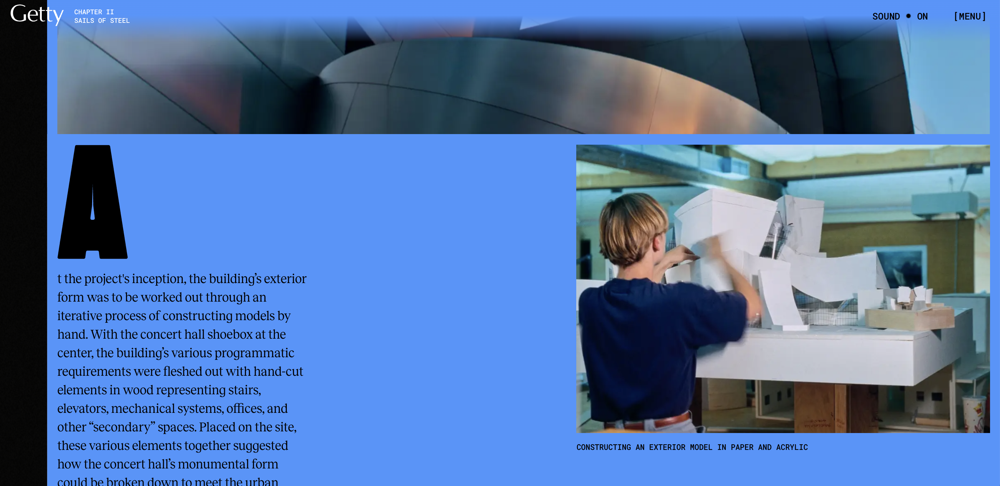
Interactive transition: The movement of the mouse brings about the
conversion of images and videos in the screen, filling the gap in
reading. Clear layers: Texts of different sizes and styles
provide breathing space for the page. Color matching: Some
bright colors complement black and white to create a sense of harmony.
Multimedia integration: The clever combination of video, audio
and animation forms an integrated artistic narrative atmosphere.
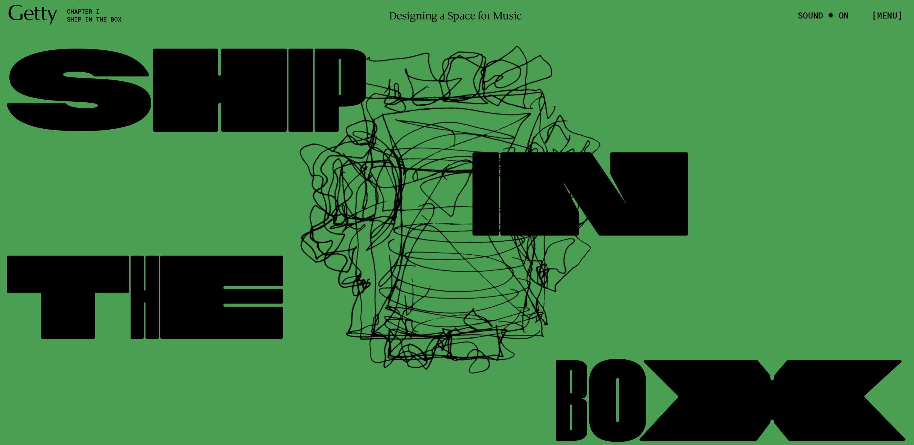
Each chapter is like a short but in-depth interaction, with both
transition and review, allowing users to review and explore repeatedly
after a short experience, thereby constantly discovering new details and
meanings. The overall feeling is short, suitable for multiple
short experiences.
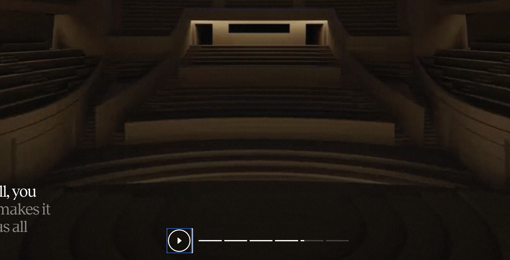
It uses repeated interaction patterns—scrolling, zooming,
transitioning—and a menu for non-linear access. These cues subtly
suggest it's okay to leave and return multiple times.
1 Modular chapters: Each section has a clear beginning and end, marked
by visual transitions and unique interactive elements 2 Repeated
interaction cues: The alternating use of text, motion, and sound in
similar patterns suggests a rhythm that can be revisited 3
Nonlinear structure: The ability to jump between sections from the
menu invites personal pacing and selective focus 4 Subtle
encouragements to pause and explore: Some transitions slow down or
wait for user input, prompting deeper engagement
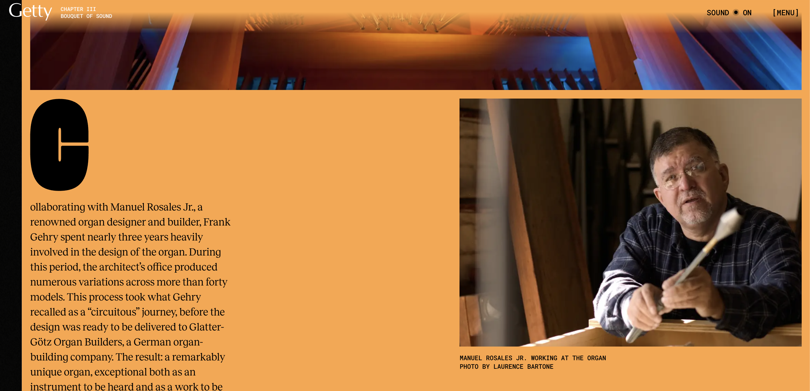
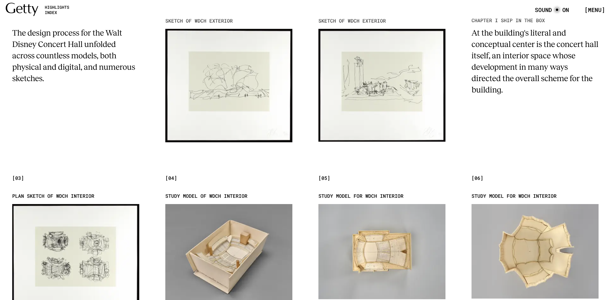
1 Digital film: immersive video storytelling 2 Exhibition
design: sections feel like interactive museum displays 3 Motion
graphics: vector-based animations and kinetic typography 4
Print-inspired layout: text hierarchy, white space, and visual rhythm
mimic editorial design 5 Architectural sketches : hand-drawn
lines and forms reference Gehry’s own process
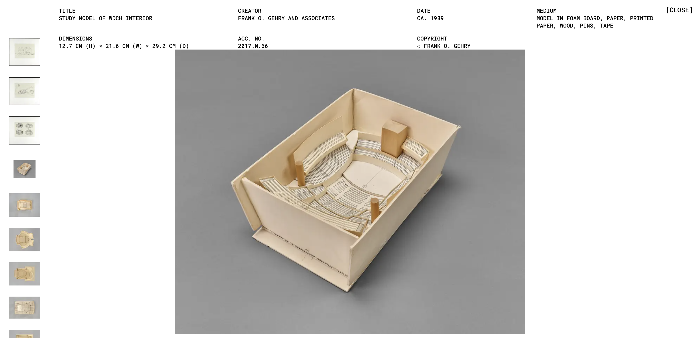
I’m encouraged to explore, click, scroll, and even pause to appreciate
transitions. It’s not only just about reading or watching, it’s also
about noticing patterns, textures, interactions and relationships. The
layout and interaction design reward curiosity and intentional
explosion. Joining is important.
I should feel curious, reflective, and emotionally engaged—immersed in
the artistic and architectural experience. I think it may make
me feel comfortable in the experience. And when I interact with
the experience, I will feel amazing about the arrangement of the
appearance of the contents.
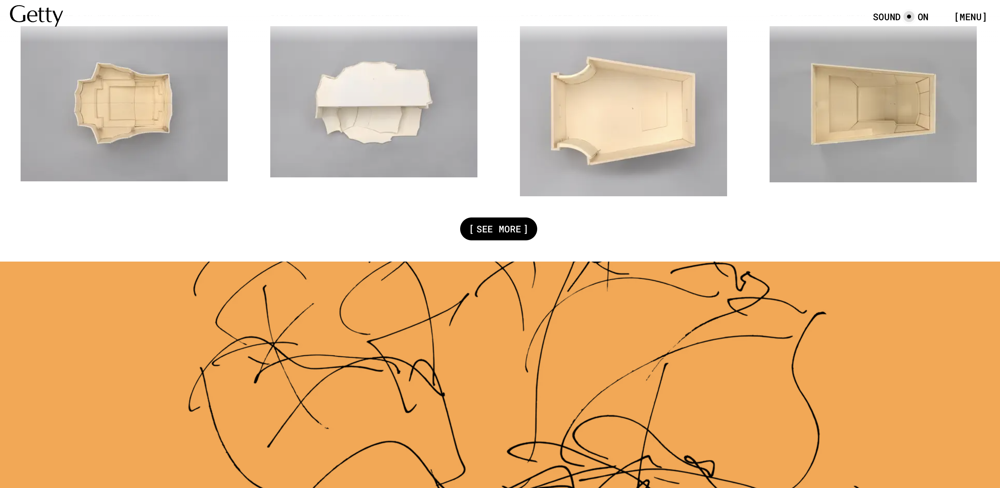
The most frustrating part is the video plays as my mouse moves. The
video segments controlled by scroll speed were hard to manage. When the
swipe is fast it plays fast.And when the mouse stops it stops playing
too. The experience is unfriendly to the people who are dizzy in 3D.
This part may make the situation worse.
I really like every special change in every part, from the static photos
to the lines or interactive diagrams and then faded into videos. This
process depends on the same thing which is the center of every part. The
dividing line for each page connects them. Also, there are some
connecting skills that help the process more smoothly, such as masking,
layering, and animation.